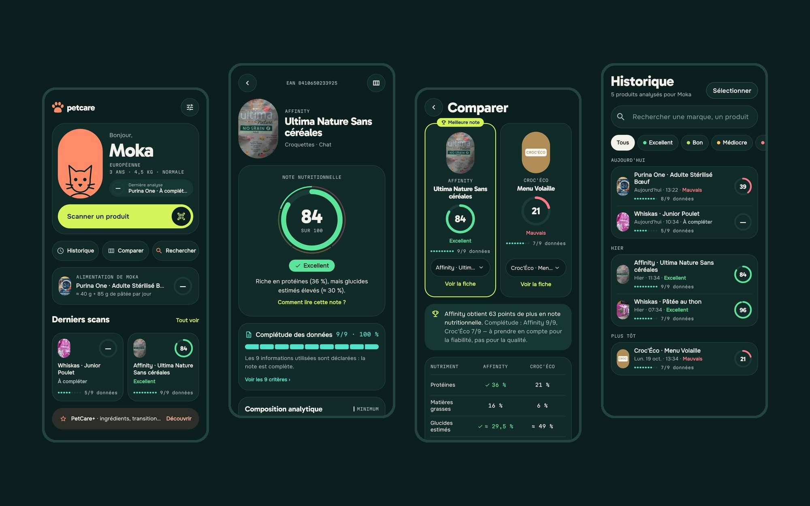
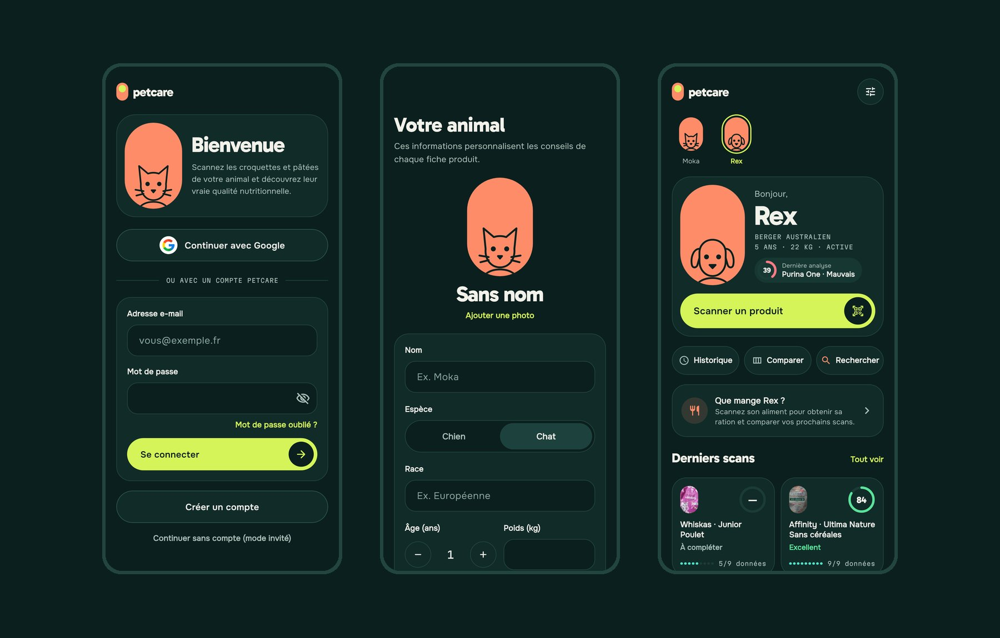
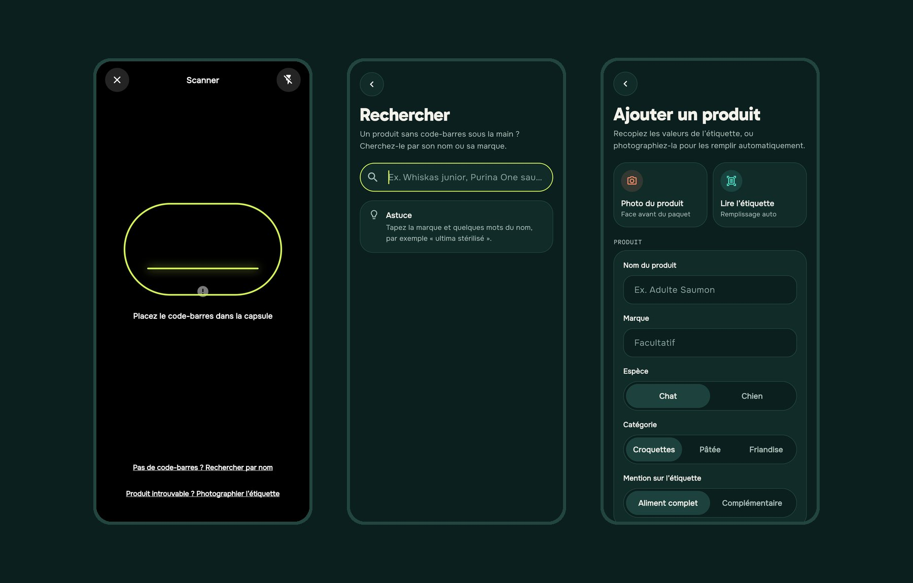
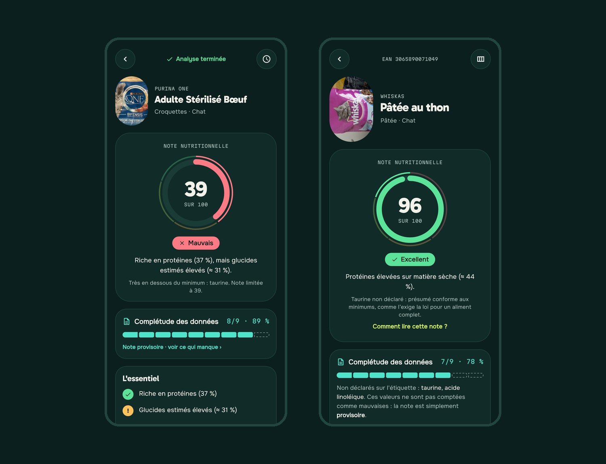
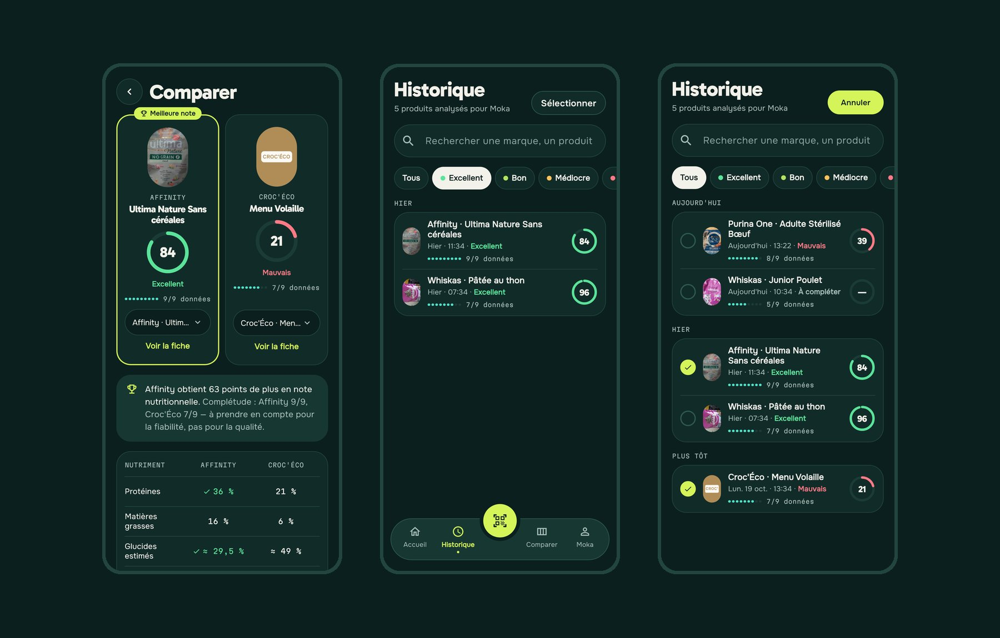
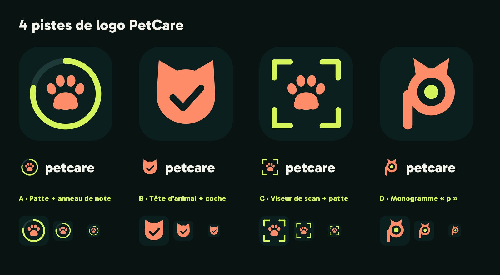

UI DESIGN
Figma
Maquettes, composants & identité visuelle.
Scanner un paquet de croquettes ou de pâtée et comprendre en un coup d'œil s'il convient à son chat ou à son chien : une note sur 100, ses points forts, ses points faibles et la ration à donner chaque jour.

Les propriétaires d'animaux veulent bien nourrir leur chat ou leur chien, mais les étiquettes de croquettes et de pâtées sont techniques, difficiles à comparer et souvent incomplètes. PetCare transforme ces informations en une réponse simple, sans jamais cacher ce qui manque.
Protéines, cendres brutes, rapport calcium/phosphore : les constituants analytiques ne parlent pas au grand public.
Une pâtée contient beaucoup d'eau, des croquettes très peu : comparer leurs pourcentages bruts n'a aucun sens.
Beaucoup de produits sont mal renseignés dans les bases ouvertes. Une note calculée sur des données absentes serait trompeuse.
L'inscription est courte, et un mode invité permet de tester l'application sans compte. Le profil de l'animal (espèce, race, âge, poids) personnalise ensuite l'accueil, les conseils et la ration journalière. On peut suivre plusieurs animaux et passer de l'un à l'autre en un geste.

Le scan du code-barres reste l'entrée principale, avec un bouton toujours accessible. Mais chaque impasse a sa sortie : pas de code-barres, on cherche par nom ; produit introuvable, on photographie l'étiquette et la reconnaissance de texte remplit les valeurs nutritionnelles.

J'ai conçu un barème inspiré des seuils nutritionnels européens (FEDIAF). Les valeurs sont recalculées sur matière sèche pour comparer équitablement pâtées et croquettes, avec des seuils différents selon l'espèce et l'âge. Chaque note est accompagnée d'une phrase qui l'explique.
Une donnée absente n'est jamais comptée comme zéro. Une jauge de complétude (par exemple 7/9 données) montre la fiabilité de la note, séparément de sa qualité. Si les informations sont trop rares, la note est marquée comme provisoire.

Le comparateur met deux produits côte à côte, désigne celui qui a la meilleure note et explique l'écart en une phrase, nutriment par nutriment. L'historique regroupe toutes les analyses par date, avec une recherche et des filtres par verdict.

Pour la nouvelle version, j'ai repensé toute l'interface en mode sombre, à partir d'un prototype HTML de référence ensuite porté en tokens dans le code. Règle centrale : chaque couleur a un seul rôle. Le citron vert sert aux actions, le turquoise aux données, le corail à l'animal, et les couleurs de verdict ne servent qu'à juger la qualité. L'utilisateur ne confond jamais une donnée incomplète avec un mauvais produit.
Action
Boutons et actions principales#D4F45ADonnées
Complétude, jamais la qualité#4FE3C9Animal
Avatar et profil de l'animal#FF8C69Fond
Mode sombre uniquement#0B1F1ETexte
Blanc cassé, plus doux#F2F1EALes couleurs de verdict, réservées à la note :
J'ai aussi exploré plusieurs pistes de logo autour de trois idées : l'animal, la note et le geste de scan. Chaque piste est testée en icône d'application, en logo complet et en petite taille.

J'ai développé l'application complète : scan, calcul de la note, ration, comptes, contributions de la communauté, abonnement et traduction.
Une seule base de code pour Android et iOS, avec la lecture du code-barres par la caméra, la vibration de confirmation et la lampe torche.
Authentification (e-mail et Google), base de données Firestore pour les profils et les produits ajoutés, et Cloud Functions.
Recherche automatique dans cette base ouverte, avec plusieurs serveurs de secours si l'un ne répond pas.
Reconnaissance de texte sur la photo de l'étiquette pour remplir automatiquement les valeurs nutritionnelles.
Gestion de l'abonnement PetCare+ (mensuel ou annuel, avec essai gratuit de 7 jours).
Application entièrement traduite, avec rappels, confidentialité et suppression du compte.
Encore en cours : le paiement réel de PetCare+ (l'abonnement est simulé en mode test) et la connexion avec Apple pour la version iPhone. Les captures montrent des données de démonstration.
UI DESIGN
Figma
Maquettes, composants & identité visuelle.

IA
Claude
Prototype HTML, design system & développement assisté.

Versioning
GitHub
Historique du code & sauvegarde.